垂直分层
利用高低差建立区域层级，让远处目标可见、抵达方式暂时未知，形成探索动机。
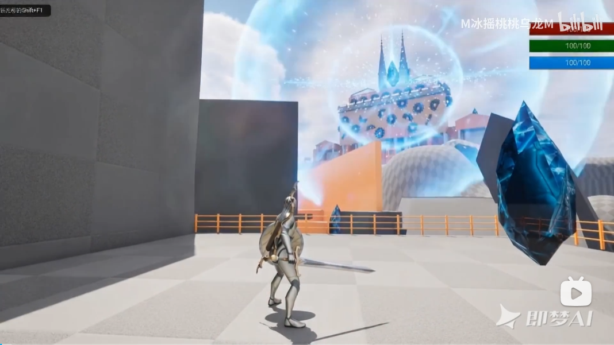
保留《时光遗迹》中已经跑通的“教学—挑战—奖励”循环，把单一路径升级为包含多层结构、支路探索和捷径连通的半开放关卡。玩家不只执行流程，而是在读懂空间后主动规划路线。
利用高低差建立区域层级，让远处目标可见、抵达方式暂时未知，形成探索动机。
以强视觉地标和水晶目标管理视线，让玩家在开放路径中始终保有宏观方向。
通过重新连通已探索区域，压缩返程成本，并把“我在哪里”转化为空间记忆奖励。
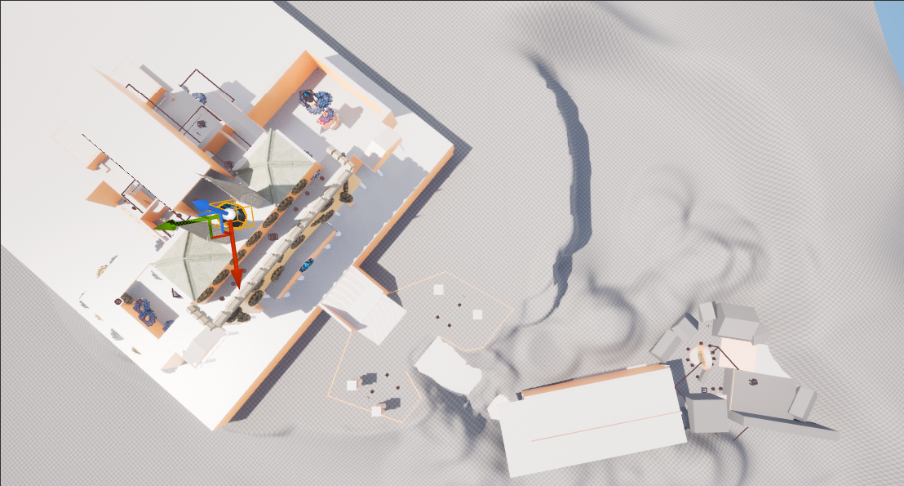
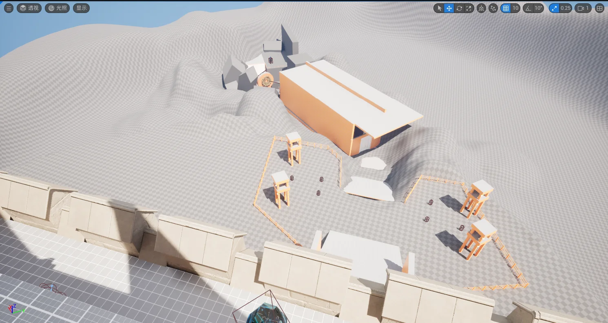
前期时停主要作用于旋转齿轮与往返平台，帮助玩家建立环境解谜规则。随着救出NPC和叙事推进，目标范围扩展到高威胁敌人，使同一能力进入战斗策略层。
冻结动态机关，改变通过窗口和平台关系。
先规划空间与时机，再执行连续移动。
冻结高威胁敌人或打断施法，创造策略窗口。
玩家点亮水晶后使用时空弹。前期只冻结环境机关5秒；救出奥古斯丁后解锁敌人时停，冻结敌人7秒并造成20点伤害，同一时间仅能控制一个目标。死亡则回溯至最近点亮的水晶。
往返平台、旋转平台、感应石、电梯、屏障与时空石构成基础词汇。
旋转＋往返＋感应石叠加，要求多次时停和连续落点规划。
剑盾战士与手枪/步枪枪手组合，用掩体和射线压力改变时停优先级。
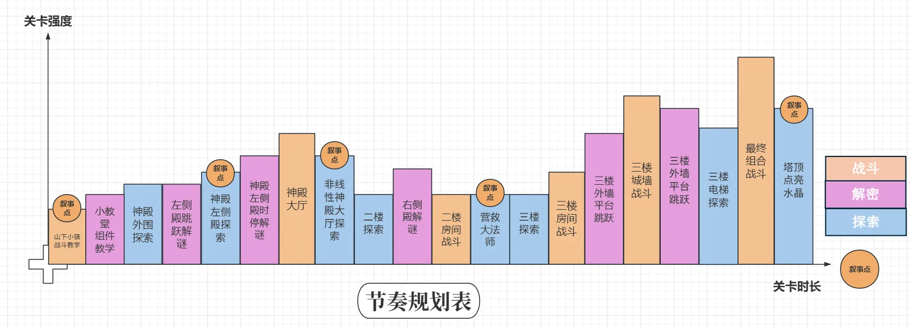
山脚小镇建立世界观与主水晶POI；小教堂解锁环境时停；上山路以狭窄到开阔的空间反差制造神殿初见。
大门战完成压力校验，侧殿教授齿轮与踩踏机关；大厅从线性转为半开放枢纽。
二楼进阶跳跃后救出奥古斯丁，解锁时停敌人并打开通往三楼的捷径。
城墙战展示空间尺度，三楼房间进行极限校验，顶楼长廊融合环境时停和敌人控场，最终点亮第9颗水晶。
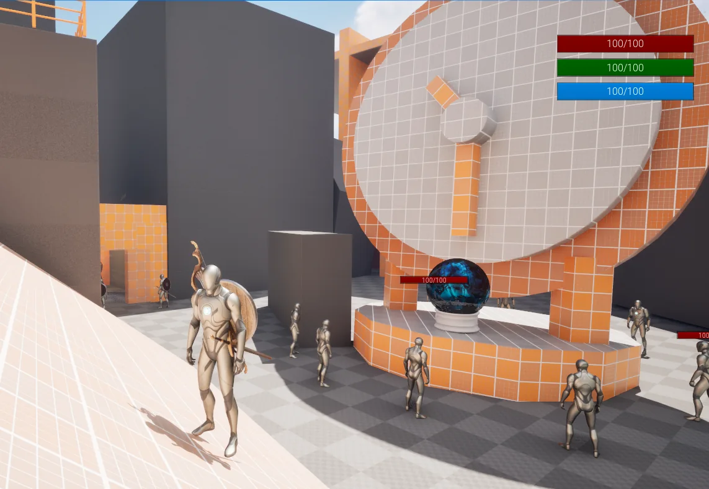
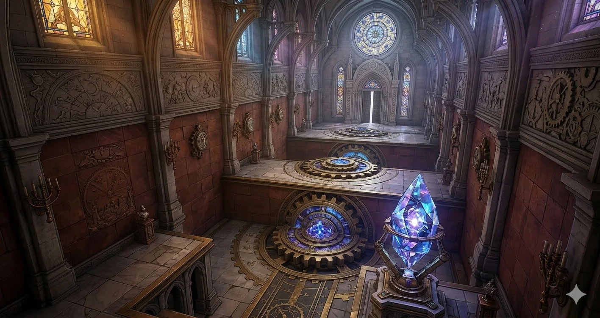
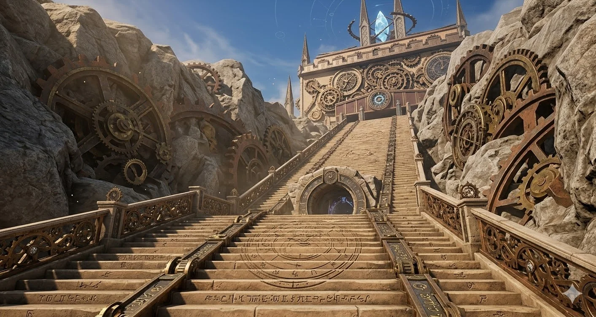
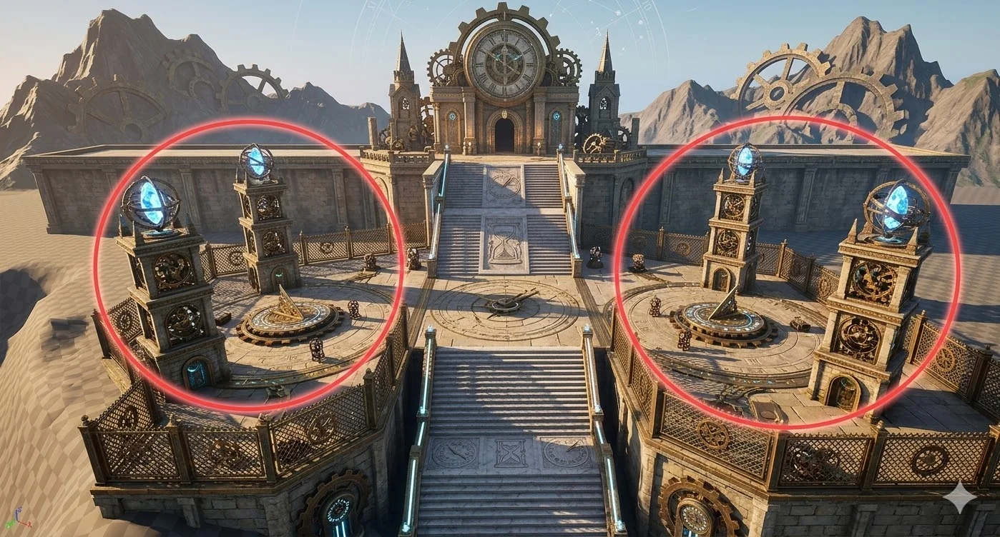
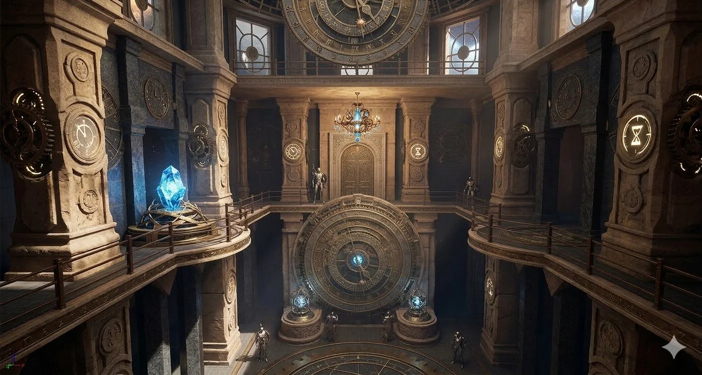
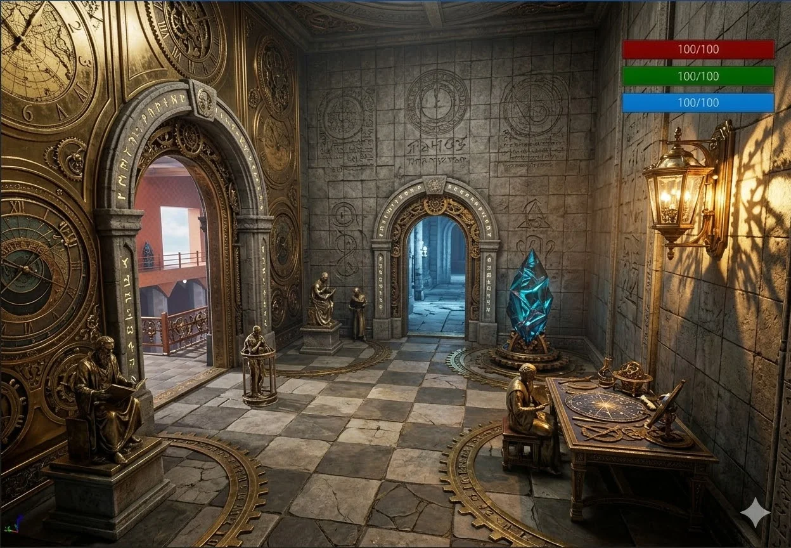

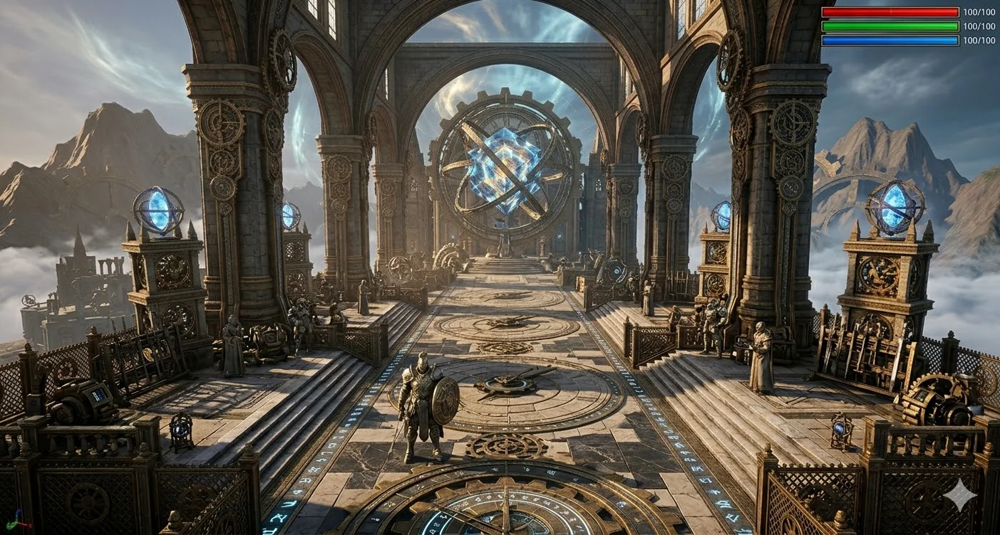
黄—橙—深橙—紫对应由低到高的四层结构。各层通过大厅、阳台、侧殿和捷径建立空间关系，神殿顶层主水晶持续作为绝对地标。
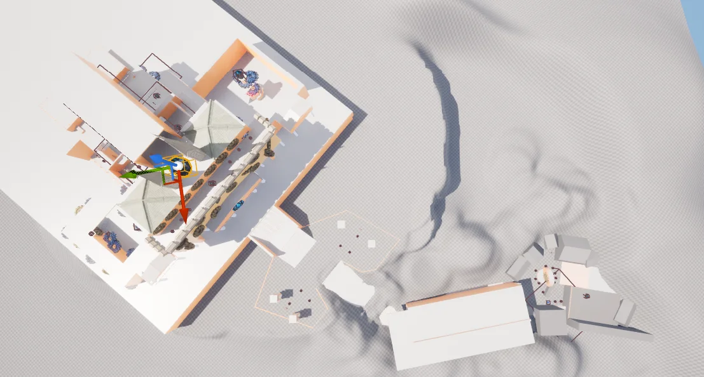
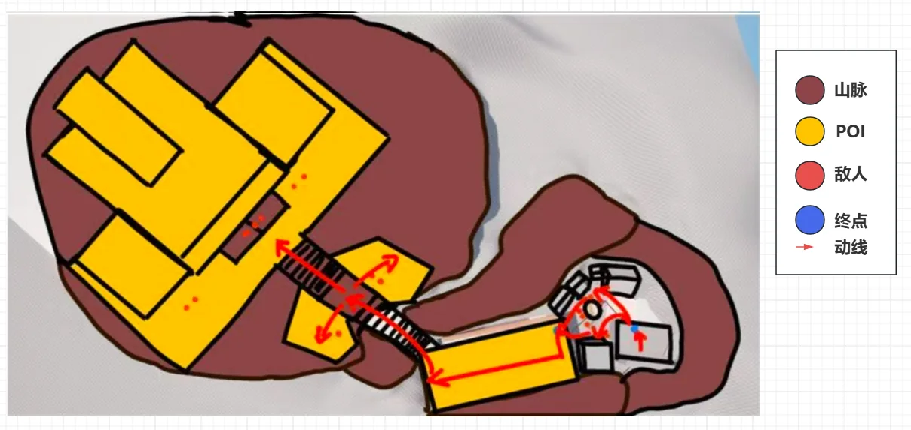
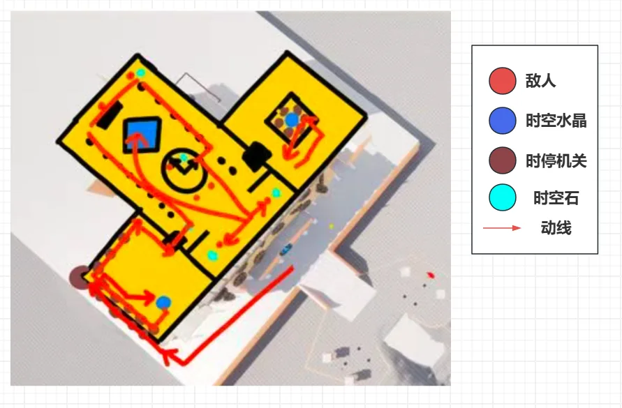
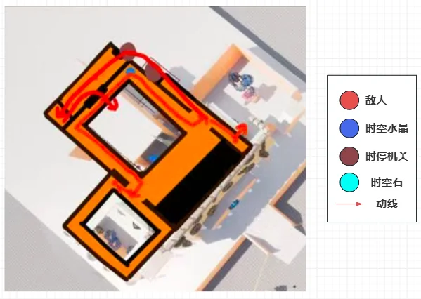
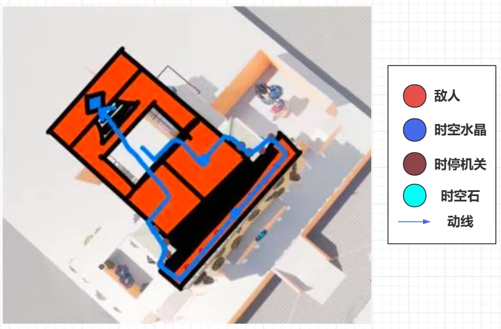
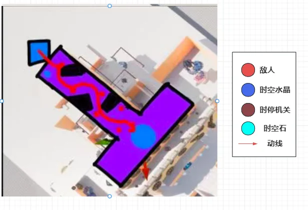
项目把传统“等待平台、寻找拉杆”的被动过程，转换为“瞄准—射击—自己造路”的主动动作。水晶材质统一标记可控对象，同一发时空弹打机关用于跑酷解谜，打敌人用于战斗控场，让一套规则自然贯穿两类体验。
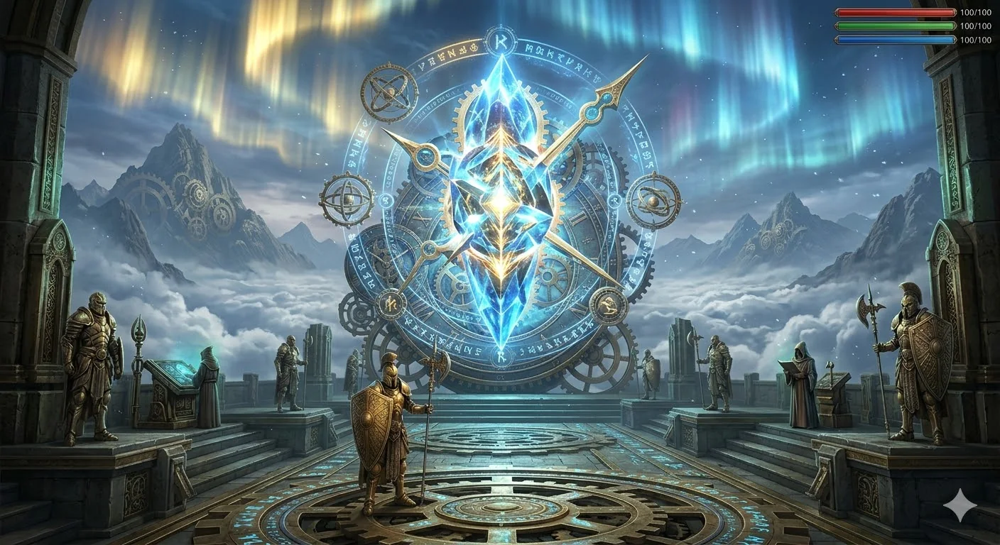